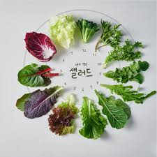

레드향
껍질에 붉은 빛이 돌아 레드향이라 불린다.
레드향은 한라봉과 귤을 교배한 것으로
일반 귤보다 2~3배 크고, 과육이 붉고 통통하다.
비타민 C와 비타민 P가 풍부해
혈액 순환, 감기예방 등에 좋은 것으로 알려져 있다.
레드향 샐러드 레시피
재료 : 레드향 1개, 아보카도 1개, 토마토 1개, 샐러드 채소 30g
드레싱 : 올리브유 1큰술, 레몬즙 2큰술, 꿀 1큰술, 소금 약간
- 샐러드 채소를 씻어 물기를 제거한 후 먹기 좋게 썰어서 준비합니다.
- 레드향과 아보카도, 토마토도 먹기 좋은 크기로 썰어 둡니다.
- 드레싱 재료를 믹서에 한꺼번에 넣고 갈아줍니다.
- 볼에 샐러드 채소와 레드향, 아보카도, 토마토를 넣고 드레싱을 뿌리면 끝!
상품 구성
| 용도 | 중량 | 개수 | 가격 |
|---|---|---|---|
| 선물용 | 3kg | 11~16과 | 35,000원 |
| 5kg | 18~26과 | 52,000원 | |
| 가정용 | 3kg | 11~16과 | 30,000원 |
| 5kg | 18~26과 | 52,000원 |
- 선물용 3kg
- 소과 13~16과
- 중과 10~12과
- 선물용 5kg
- 중과 15~19과